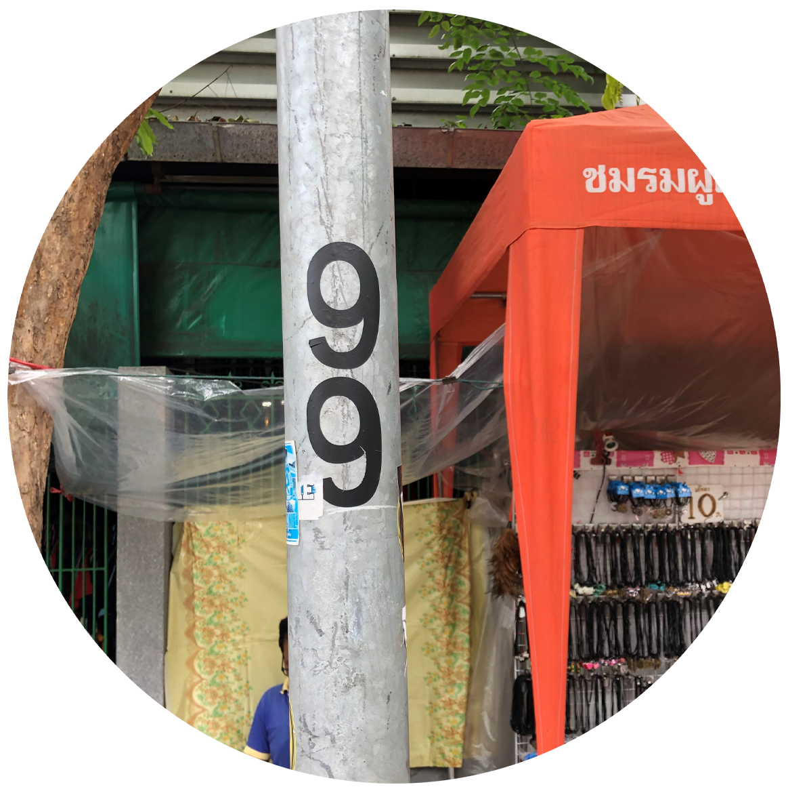
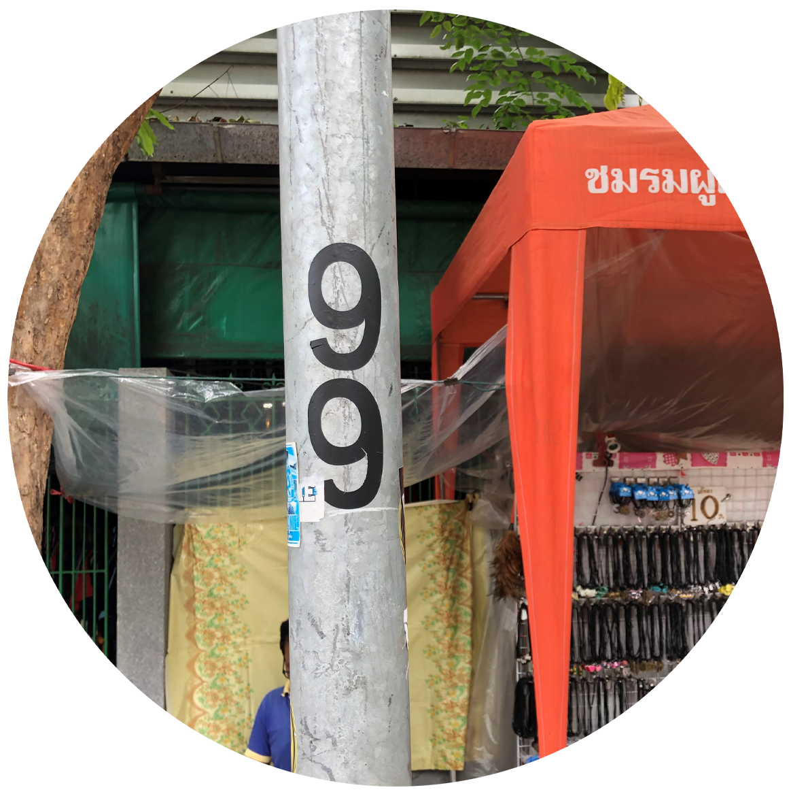

S U P E R S T I T I O N
信仰と迷信は私たちと常に共にあるものです。 迷信は私たちを危害から守るものもあれば習 慣や宗教的信念を表すものもあります。私た ちはタイと日本の迷信の違いを比較します。

信仰と迷信は私たちと常に共にあるものです。 迷信は私たちを危害から守るものもあれば習 慣や宗教的信念を表すものもあります。私た ちはタイと日本の迷信の違いを比較します。


タイと日本にはカラスが鳴いたら不幸になると いう迷信がある。カラスは人の死を予知する能 力があるといわれているからである。タイの人 々はフクロウを死の天使だと信じられている。 それが誰かの家に飛んでいる場合、そこに住 んでいる人は死んでしまうといわれている。
.png)
.png)


日本人は黒猫が横切ると不幸が訪れると 思っている。それは黒色が死の象徴とい われているためである。多くのタイ人は 赤色は縁起の良い色だと信じています。 しかし赤色は葬儀では禁止されています。
日本の人々はしゃっくりを100回すると死ぬと 死ぬと信じています。なぜそう言われているか というと、子供が怖がってしゃっくりを止めよ うと努力するからです。タイの人々は脱水症状 によって引き起こされると信じています。なの でしゃっくりを引き起こさないために水をたく さん飲むことを心に留めています。


日本ではもし茶碗に米が残っていたら、 目が潰れると言われています。昔はお 金とお米は同じ価値であったと言われ ており、米を残すことはお金を捨てて るようなものでした。タイの人々は食 事の時に食器をスプーンやフォークで 鳴らすことで、幽霊を呼ぶ行為になる と信じています。
日本では9の発音は苦、4の発音は死と同じなので 縁起が悪い数字とされています7は縁起の多いもの が多く、8は神様の数字とされているため、縁起の 良い数字とされています。タイの人々は数字の8と 9は幸運をもたらす数字だと信じています。なお、 4が縁起の悪い理由については中国語で「死」と いう単語とタイ語での4の発音が同じだからです。
 

:PAWANACHAI SEERVESANG
KAN
COMPUTER ENGINEERING RMUTT/THAILAND
TAKASHI SHION
TAKASHI
INFORMATIONMEDIA TECHNOLOGY HIU/JAPAN


KIATTISAK KONGRAK
CAPTAIN
MULTIMEDIA TECHNOLOGY RMUTT/THAILAND
NAOYA MORI
MORRY
INFORMATIONMEDIA TECHNOLOGY HIU/JAPAN